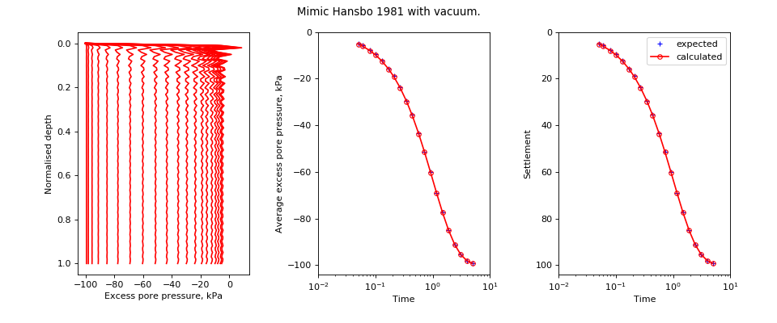

speccon example code: speccon1d_vr_radial_mimic_hansbo1981_with_vacuum.py¶
# speccon1d_vr example (if viewing this in docs, plots are at bottom of page)
# Radial drainage only, mimic Hansbo (1981) with a vacuum.
# Pore pressure in drain and at top boundary instantly drop to -100.
# Result should be [Hansbo1981]-100. Note the oscillations in pore pressure
# due to no vertical drainage being modelled (Trying to represent a straight
# line with a fourier series).
# Nogami, Toyoaki, and Maoxin Li. (2003) 'Consolidation of Clay with a
# System of Vertical and Horizontal Drains'. Journal of
# Geotechnical and Geoenvironmental Engineering 129, no. 9
# 838-48. doi:10.1061/(ASCE)1090-0241(2003)129:9(838).
# This file should be run with python. It will not work if run with the
# speccon1d_vr.exe script program.
from __future__ import division, print_function
import numpy as np
from geotecha.speccon.speccon1d_vr import Speccon1dVR
import matplotlib.pyplot as plt
#Expected values
#t = time values
#hansbo_avp = average pore pressure for surcharge load of 1.
#avp = average excess pore pressure
#por = excess pore pressure at time t and depth z.
#settle = settlement
t = np.array(
[ 0.05, 0.06, 0.08, 0.1 , 0.13, 0.17, 0.21, 0.27, 0.35,
0.44, 0.57, 0.72, 0.92, 1.17, 1.49, 1.9 , 2.42, 3.09,
3.93, 5.01])
# with dTh=0.1, hansbo_avg is simply exp(-0.1*t)
hansbo_avp = np.array(
[[ 0.95122942, 0.94176453, 0.92311635, 0.90483742, 0.87809543,
0.84366482, 0.81058425, 0.76337949, 0.70468809, 0.64403642,
0.56552544, 0.48675226, 0.39851904, 0.31036694, 0.22537266,
0.14956862, 0.08892162, 0.04550195, 0.01964367, 0.0066709 ]])
avp = 100 * hansbo_avp - 100
settle = 100 - 100 * hansbo_avp
reader = ("""\
H = 1
drn = 1
dTh = 0.1
neig = 60
mvref = 2.0
mv = PolyLine([0, 1], [0.5, 0.5])
kh = PolyLine([0, 1], [5, 5])
et = PolyLine([0,1], [1, 1])
vacuum_vs_depth = PolyLine([0,1], [1,1])
vacuum_vs_time = PolyLine([0,0.0,8], [0,-100,-100])
top_vs_time = PolyLine([0,0.0,8], [0,-100,-100])
ppress_z = np.linspace(0,1,100)
avg_ppress_z_pairs = [[0,1]]
settlement_z_pairs = [[0,1]]
tvals = np.%s
""" % (repr(t)))
a = Speccon1dVR(reader)
a.make_all()
# custom plots
title = ("Mimic Hansbo 1981 with vacuum.")
fig = plt.figure(figsize=(12,5))
fig.suptitle(title)
#z vs u
ax1 = fig.add_subplot("131")
ax1.set_xlabel('Excess pore pressure, kPa')
ax1.set_ylabel('Normalised depth')
ax1.invert_yaxis()
#ax1.plot(por, z,
# ls="None", color='Blue', marker="+", ms=5,
# label='expected')
ax1.plot(a.por, a.ppress_z,
ls='-', color='red', marker=None, ms=5, markerfacecolor='None',
markeredgecolor='red',
label='calculated')
# avp vs t
ax2 = fig.add_subplot("132")
ax2.set_xlabel('Time')
ax2.set_ylabel('Average excess pore pressure, kPa')
ax2.set_xscale('log')
ax2.set_xlim((0.01, 10))
ax2.plot(t, avp[0],
ls="None", color='Blue', marker="+", ms=5,
label='expected')
ax2.plot(t, a.avp[0],
ls='-', color='red', marker='o', ms=5, markerfacecolor='None',
markeredgecolor='red',
label='calculated')
# settlement vs t
ax3 = fig.add_subplot("133")
ax3.set_xlabel('Time')
ax3.set_ylabel('Settlement')
ax3.invert_yaxis()
ax3.set_xscale('log')
ax3.set_xlim((0.01, 10))
ax3.plot(t, settle[0],
ls="None", color='Blue', marker="+", ms=5,
label='expected')
ax3.plot(t, a.set[0],
ls='-', color='red', marker='o', ms=5, markerfacecolor='None',
markeredgecolor='red',
label='calculated')
leg = ax3.legend()
leg.draggable()
fig.subplots_adjust(top=0.90, bottom=0.15, left=0.1, right=0.94, wspace=0.4)
#fig.tight_layout()
plt.show()
(Source code, png, hires.png, pdf)
{kind=link}
{kind=link}
